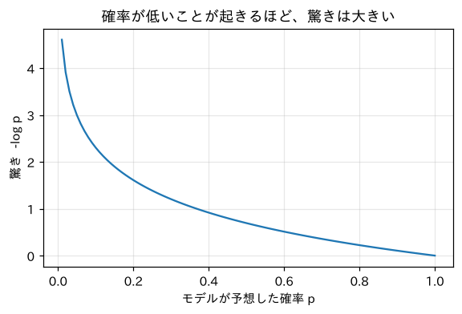

第2部 ゼロから作る · 第5章
モデルに点数をつける：損失とパープレキシティ
確率を掛けたら0になった事件と、対数という救世主
おすすめは「ページを読みながら、コードを自分のノートブックに1セルずつ貼って実行」。完成ノートは困ったときの答え合わせ用です。
つくるもの
言語モデルの成績を1つの数で表す「損失（loss）」の計算機と、これから全章で使う「記録表」
ついでに身につく理論
- 訓練データと検証データ（過去問と本番）
- 確率の掛け算とアンダーフロー
- 対数 と、その3つの性質
- 負の対数尤度＝損失（驚きの平均）
- スムージングとハイパーパラメータ
- パープレキシティ（何択で迷っているか）
新しく使うPython
math.log- 関数に初期値つきの引数
float('inf')（無限大）matplotlibでグラフを描く

ミナト
点数のつけ方って、生成した文章を人間が読んで「80点！」とかじゃダメなんですか？

ボンゴ先生
それも大事な方法だ（第20章でやる）。でも、学習中のモデルは1秒に何百回も成績を知りたがる。毎回キミが読んで採点していたら、キミが先に倒れる。だから「計算だけで出せる点数」が必要なんだ。
準備：『こころ』を読み込む
第4章で作った掃除の関数を、ダウンロードまで含めて1つにまとめておきます。この準備セルは、第10章まで毎回最初に実行します。
import re, math, urllib.request
from collections import Counter
def load_soseki(file_id="773_ruby_5968"):
url = ("https://raw.githubusercontent.com/aozorahack/aozorabunko_text/master/"
f"cards/000148/files/{file_id}/{file_id}.txt")
text = urllib.request.urlopen(url).read().decode("cp932")
text = text.split("-------------------------------------------------------")[2]
text = text.split("底本：")[0]
text = re.sub(r"《.*?》", "", text)
text = re.sub(r"※?［＃.*?］", "", text)
text = text.replace("｜", "").replace("\r\n", "\n")
text = re.sub(r"\n{3,}", "\n\n", text)
return text.strip()
text = load_soseki()
print(len(text), "文字")162467 文字過去問と本番：データを分ける
モデルの点数をつける前に、大事な準備があります。データを2つに分けるのです。
n = int(len(text) * 0.9)
train_text = text[:n] # 前の90%：学習用（数える用）
val_text = text[n:] # 後ろの10%：点数をつける用
print("訓練データ：", len(train_text), "文字")
print("検証データ：", len(val_text), "文字")訓練データ： 146220 文字
検証データ： 16247 文字訓練データだけでbigramを数え直します。
pairs = Counter(zip(train_text, train_text[1:]))
firsts = Counter(train_text[:-1])
def prob(a, b):
"""P(b | a)：「a」の次が「b」である確率"""
if firsts[a] == 0:
return 0.0
return pairs[(a, b)] / firsts[a]
print("P(生|先) =", prob("先", "生"))
print("P(は|生) =", prob("生", "は"))P(生|先) = 0.8857566765578635
P(は|生) = 0.23097112860892388文章の確率を計算する
モデルが「この文章はありそうだ」と思うほど、良いモデルのはずです。では、文章全体の確率はどう計算するのでしょう？ 「先生は」が出てくる確率は、「先の次に生」かつ「生の次には」なので、掛け算になります。
（厳密には最初の「先」の確率も掛けますが、ここでは省きます。）では、訓練データの最初の数百文字で同じことをしてみましょう。どのペアも訓練データで数えたものなので、確率が0になることはないはずです。
p = 1.0
for i, (a, b) in enumerate(zip(train_text, train_text[1:])):
p = p * prob(a, b)
if i in [10, 50, 100, 150, 200, 300]:
print(f"{i:4d}文字目まで：確率 {p}") 10文字目まで：確率 2.999105026951313e-16
50文字目まで：確率 2.7431965930303487e-71
100文字目まで：確率 5.506246902145188e-135
150文字目まで：確率 1.2818683751043334e-213
200文字目まで：確率 2.0794249766405372e-279
300文字目まで：確率 0.0ボンゴ先生
事件だ！ どのペアも確率は0じゃないのに、掛け算を続けたら、300文字目でとうとうぴったり0になってしまった。200文字目の e-279 は「10のマイナス279乗」、つまり小数点の後に0が278個並ぶ数だ。宇宙にある原子の数（だいたい 個）で1を割っても、まだまだこんなに小さくはならない。
0になってしまうと、どのモデルの確率も「0」で、比べようがありません。どうしましょう？
救世主：対数（log）
ここで登場するのが 対数（たいすう、logarithm）です。
print(math.log10(1000), math.log10(0.01))
print(math.log(math.e), math.log(1))
print(math.log(0.5), math.log(0.01))3.0 -2.0
1.0 0.0
-0.6931471805599453 -4.605170185988091log_p = 0.0
for i, (a, b) in enumerate(zip(train_text, train_text[1:])):
log_p = log_p + math.log(prob(a, b))
if i in [10, 50, 100, 200, 300]:
print(f"{i:4d}文字目まで：log確率 {log_p:.1f}") 10文字目まで：log確率 -35.7
50文字目まで：log確率 -162.5
100文字目まで：log確率 -309.1
200文字目まで：log確率 -641.7
300文字目まで：log確率 -951.2もう0になりません。事件解決です。
損失：驚きの平均
「log確率の合計」は文章が長いほどマイナスに大きくなるので、長さの違う文章どうしを比べにくいです。そこで、1文字あたりの平均にします。さらに、マイナスの数は扱いにくいので、符号をひっくり返してプラスにします。これが言語モデルの点数、損失（loss）です。
驚きの大きさをグラフにしてみましょう。グラフを描く道具 matplotlib を使います（日本語を表示するための追加の道具も入れます）。
!pip install -q matplotlib-fontjaimport matplotlib.pyplot as plt
import matplotlib_fontja
ps = [i / 100 for i in range(1, 101)]
plt.figure(figsize=(6, 3.5))
plt.plot(ps, [-math.log(p) for p in ps])
plt.xlabel("モデルが予想した確率 p")
plt.ylabel("驚き -log p")
plt.title("確率が低いことが起きるほど、驚きは大きい")
plt.grid(alpha=0.3)
plt.show()
それでは、訓練データと検証データで損失を計算してみましょう。
def bigram_loss(data, prob_fn):
total = 0.0
for a, b in zip(data, data[1:]):
p = prob_fn(a, b)
if p == 0:
return float("inf") # 確率0の出来事 → 驚きは無限大
total += -math.log(p)
return total / (len(data) - 1)
print("訓練データの損失：", bigram_loss(train_text, prob))
print("検証データの損失：", bigram_loss(val_text, prob))訓練データの損失： 3.010172965334805
検証データの損失： infミナト
検証データの損失が inf……無限大？
ボンゴ先生
検証データには、訓練データで一度も見たことがない文字のペアが出てくるからだ。数えるだけのモデルは、見たことのないペアに確率0をつける。そして、確率0のことが起きたら、驚きは無限大。モデルは「絶対にありえない！」と言い張っていたのに、起きてしまったわけだ。
unseen = sum(1 for a, b in zip(val_text, val_text[1:]) if pairs[(a, b)] == 0)
print("検証データのペア：", len(val_text) - 1, "個のうち、訓練で見ていないもの：", unseen, "個")検証データのペア： 16246 個のうち、訓練で見ていないもの： 1315 個「絶対」を言わないモデル：スムージング
対策はシンプルです。どのペアにも、ほんの少しだけ回数を足しておくのです。見たことがないペアにも「0.01回くらいは見たかもね」とおまけをつける。これを スムージング（smoothing、なめらかにする）と言います。
は語彙の数です。分母にも を足すのは、確率の合計をちゃんと1にするためです（全部の に ずつ足したので）。
V = len(set(text))
def make_smoothed(k):
def p(a, b):
return (pairs[(a, b)] + k) / (firsts[a] + k * V)
return p
for k in [1, 0.1, 0.01, 0.001]:
p_k = make_smoothed(k)
print(f"k={k:<6} 訓練 {bigram_loss(train_text, p_k):.3f} 検証 {bigram_loss(val_text, p_k):.3f}")k=1 訓練 4.303 検証 4.385
k=0.1 訓練 3.488 検証 3.748
k=0.01 訓練 3.139 検証 3.581
k=0.001 訓練 3.033 検証 3.652パープレキシティ：何択で迷っているか
損失「3.581」と言われても、ピンとこないかもしれません。そこで、もう少し直感的な数に変換します。
print("bigram（k=0.01）のパープレキシティ：", math.exp(3.581))
print("でたらめに選ぶモデルの損失：", math.log(V), " パープレキシティ：", math.exp(math.log(V)))bigram（k=0.01）のパープレキシティ： 35.909432330660664
でたらめに選ぶモデルの損失： 7.630946580890459 パープレキシティ： 2061.0記録表をつけよう
これから章を進むごとに、新しいモデルを作り、この検証データの損失で成績を比べていきます。いわば、モデルの進化の記録表です。
| モデル | 章 | 検証データの損失 | パープレキシティ |
|---|---|---|---|
| でたらめ（一様分布） | 5 | 7.631 | 2061 |
| bigram（数える、k=0.01） | 5 | 3.581 | 35.9 |
| ？？？ | 8 | ？ | ？ |
| ？？？ | 9 | ？ | ？ |
| ？？？ | 13 | ？ | ？ |
どこまで小さくできるでしょうか。ちなみに、第13章のGPTは……それは見てのお楽しみ。
もっと深く情報理論との関係（ビットで数える）
自然対数の代わりに を使うと、損失の単位は ビット になります。「1文字を予測するのに、平均何ビット分の情報が足りないか」という意味で、エントロピーという考え方につながります。 なので、3.581 ÷ 0.693 ≈ 5.17ビット。つまり私たちのモデルは、次の1文字を当てるのに「Yes/Noの質問をあと約5回したい」状態です。
この考え方は、1948年にクロード・シャノンが作った 情報理論 から来ています。シャノンは英語の1文字あたりのエントロピーを、人間に次の文字を当てさせる実験で推定しました。まさに人間を言語モデルとして使ったわけです。
クイズ 1：損失の向き
モデルAの検証損失は3.2、モデルBは2.9でした。どちらが良いモデル？
答えを見る（まず自分で考えてから！）
モデルBです。損失は「驚きの平均」なので、小さいほど次の文字をうまく予想できています。
クイズ 2：対数の性質
を、 を使って計算すると？
答えを見る（まず自分で考えてから！）
掛け算は足し算になるので、 です。
クイズ 3：パープレキシティ
損失がちょうど のモデルのパープレキシティは？ 何を意味する？
答えを見る（まず自分で考えてから！）
。モデルは平均して「10択」くらいで迷っている、という意味です。
できたらチェック
ボンゴ先生
数えるモデルの限界は見えてきた。じゃあ「学習する」モデルを作ろう……と言いたいところだが、その前に道具をそろえる。2061行×2061列の数の表を、Pythonの辞書でちまちま扱っていたら日が暮れる。次の章では、大量の数を一気に計算する道具「テンソル」を手に入れる。GPUの本領発揮もそこからだ。
押すと目次にチェックが付きます（この端末のブラウザにだけ保存）。